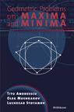
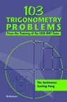

|  | Geometric Problems on Maxima and Minima |
Questions of maxima and minima have great practical significance, with applications to physics, engineering, and economics; they have also given rise to theoretical advances, notably in calculus and optimization. Indeed, while most texts view the study of extrema within the context of calculus, this carefully constructed problem book takes a uniquely intuitive approach to the subject: it presents hundreds of extreme value problems, examples, and solutions primarily through Euclidean geometry. Key features and topics:
Written by a team of established mathematicians and professors, this work draws on the authors’ experience in the classroom and as Olympiad coaches. By exposing readers to a wealth of creative problem-solving approaches, the text communicates not only geometry but also algebra, calculus, and topology. Ideal for use at the junior and senior undergraduate level, as well as in enrichment programs and Olympiad training for advanced high school students, this book’s breadth and depth will appeal to a wide audience, from secondary school teachers and pupils to graduate students, professional mathematicians, and puzzle enthusiasts. |
|  | 103 Trigonometry Problems From the Training of the USA IMO Team |
103 Trigonometry Problems contains carefully-selected problems and solutions used in the training and testing of the USA International Mathematical Olympiad (IMO) team. Though many problems may initially appear impenetrable to the novice, most can be solved using only elementary high school mathematics techniques. Key features:
103 Trigonometry Problems is a cogent problem-solving resource for advanced high school students, undergraduates, and mathematics teachers engaged in competition training. Written for: Students; instructors; mathematics coaches |